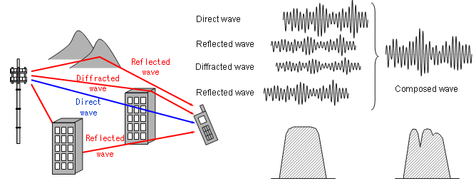
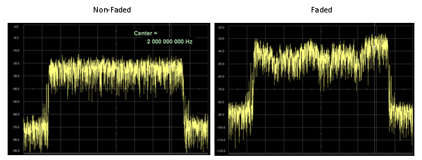
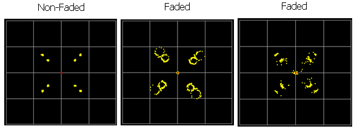
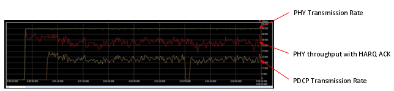
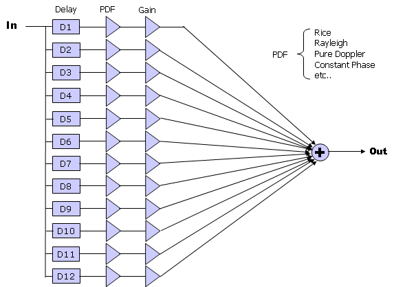
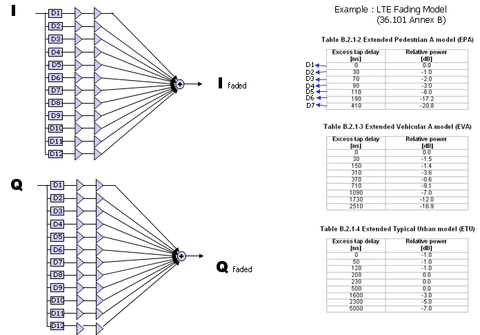
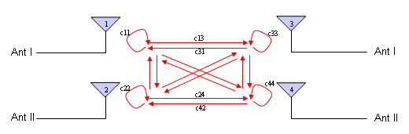
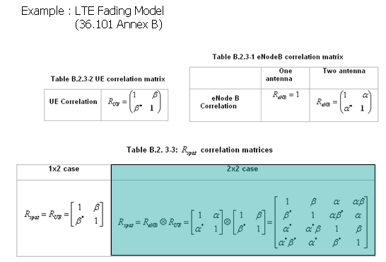

|
LTE Quick Reference Go Back To Index Home : www.sharetechnote.com |
|
|
In most of the wireless communication environement, a signal out of a transmitter radiate into wide direction and these radiated signal takes different path and arriving at the reciever at different timing and with different signal strength(amplitude). As a result, the signal coming into the reciever is the composite of all the components. As you may learned in high school physics, when the two copies of the signal get combined the resulting signal can be an augmented signal or attenuated signal depending on whether the two signal constructively combined or destructively combined. Then what determines whether the signals constructively combine or destructively combine ? The answer also come from high school physics. The phase of the two signal determines whether the signal constructively combine or destructively combine. In wireless communication environment, many copies of the signals get combined at the reciever side and some of them constructively combines and some of them destructively combines. So final result of combination of all the incoming signals become very complicated and the combined signal becomes drastically different from the original signal tranmitted from the source. In most case, the quality of the combined signal at the reciever gets poorer (deteriorated) than the original signal. This kind of process of signal deterioration by the multiple propogation path of a signal is called 'Fading'. When we say "Fading", it usually implies "Signal quality gets bad".

For more intuitive unerstanding of the fading, I will show you a couple of different aspect of fading you can mesure using various equipments.
First, let's compare a faded signal and non-faded signal using a spectrum analyzer. You would get the two results as follows and you will see the highly fluctuating amplitude across the channel bandwidth. (Note : These two capture are not the one from the same signal, so comparing the absolute value of the amplitude does not many any sense. Just take the image of overall amplitude profile).

Now let's look at how the fading influence the signal quality decoded by the reciever. Look at the following samples of constellation for faded and non-faded signal.

Now let's get into even further and I think this is the thing that you would be most interested in. How this fading would influence the final performance. Following graph shows the data rate at PHY layer and PDCP layer. The plot showing at the top (labeled as 'PHY Transmission Rate') is the amount of data being transmitted per second by PHY layer of the transmitter. The plot in the middle (labeled as 'PHY throughput with HARQ ACK' is the amount of data getting ACKED per second from the reiever PHY layer. You see there is pretty much gap between the two plots. It means that a considerable portions of the data were failed to get properly decoded by the reciever and the reciever sent NACK for the data. Normally in this case, the transmitter PHY layer retransmits the previous data rather than moving into the next step of the transmission. The plot at the bottom (labelled as 'PDCP Transmission Rate') is the amount of data being sent to the lower layer from the transmitter's PDCP layer. You will see another gap here. It is not easy to explain exactly what is causing this gap. In this case, some portions of the gap would come from the overhead of higher layer data structure but majority of the gap would be because PDCP cannot push the data down to the lower layer since PHY layer is too busy with retransmitting the previous data rather than transmitting the new data coming from the higher layer. 
Typical model for Fading channel can be described by a simple diagram as follows. This is very simplified model but fortunately this is almost enough for 3GPP specification for fading test. As you see, a signal comes into the fading block and splits into multiple path. Each path has three components, namely Delay, PDF, Gain component. By changing these parameters in each path, you can construct pretty complicated fading channel.

In LTE 3GPP specification, typical three types of Fading profiles are defined as follows.

In addition to this delay, gain, PDF, we have to think about the correlations among all the antenna on transmitter and reciever side as follows.

These correlation is defined in 3GPP as shown below and this correlation matrix should be applied to the Fading model when we use multiple antenna configuration.

|